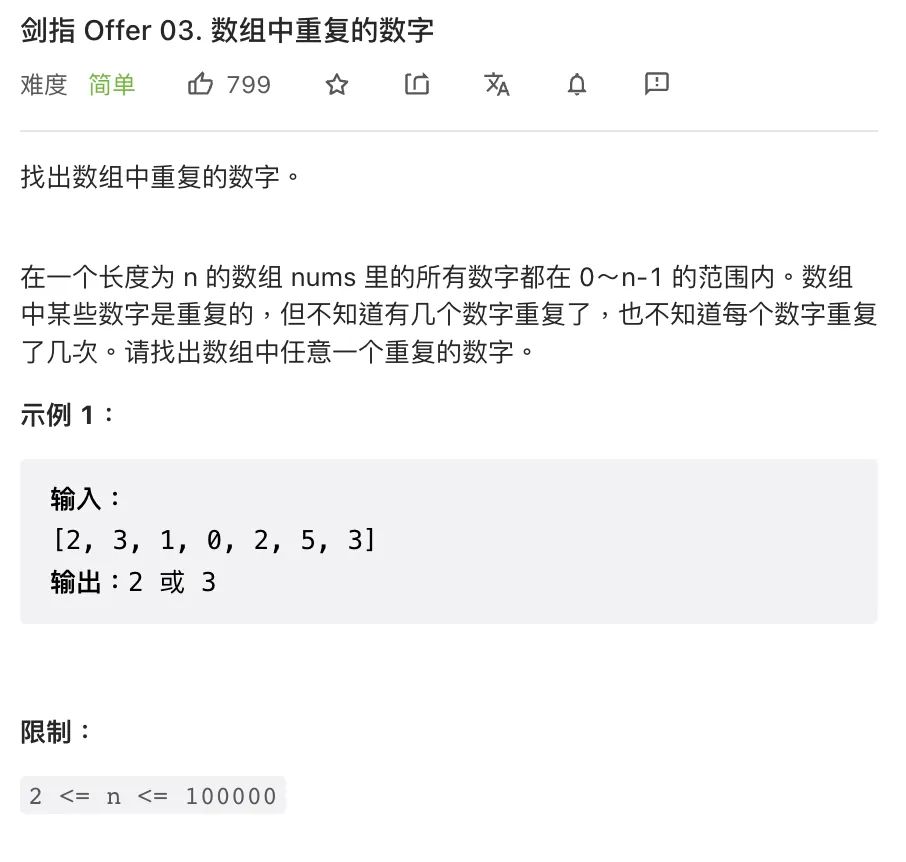

剑指 Offer 03. 数组中重复的数字
Question

✍🏽 My Solution
执行用时：11 ms, 在所有 Java 提交中击败了7.46%的用户
内存消耗：50.5 MB, 在所有 Java 提交中击败了14.63%的用户
class Solution {
public int findRepeatNumber(int[] nums) {
HashMap<Integer, Integer> map = new HashMap<Integer, Integer>();
for (int i = 0; i < nums.length; i++) {
int count = 1;
if (map.containsKey(nums[i])) {
count += map.get(nums[i]);
}
map.put(nums[i], count);
}
for (int i = 0; i < nums.length; i++) {
if (map.get(nums[i]) > 1) {
return nums[i];
}
}
return -1;
}
}
🧠 Thought Process
- Why did I choose this particular implementation?
- 建立哈希表，遍歷數組將數據及數據出現次數計入
- 遍歷數組在map裡的Value，確認是否有 value 大於 1 的，即為有重複值，返回 該數值，若都沒有退出for循環，則為找不到 return -1
- What is the time/space complexity of my solution? How do I know?
- time: O(n)
- space: O(n)
Solution # [王爭-位圖]
Solution #1 [technique]
class Solution {
public int findRepeatNumber(int[] nums) {
Set<Integer> set = new HashSet<Integer>();
int repeat = -1;
for (int num : nums) {
if (!set.add(num)) {
repeat = num;
break;
}
}
return repeat;
}
}
Explanation (in my words)
- How does their solution work?
- 由于只需要找出数组中任意一个重复的数字，因此遍历数组，遇到重复的数字即返回。为了判断一个数字是否重复遇到，使用集合存储已经遇到的数字，如果遇到的一个数字已经在集合中，则当前的数字是重复数字。
- 初始化集合为空集合，重复的数字
repeat = -1 - 遍历数组中的每个元素：
- 将该元素加入集合中，判断是否添加成功
- 如果添加失败，说明该元素已经在集合中，因此该元素是重复元素，将该元素的值赋给
repeat，并结束遍历
- 如果添加失败，说明该元素已经在集合中，因此该元素是重复元素，将该元素的值赋给
- 将该元素加入集合中，判断是否添加成功
- 返回
repeat
- What is the space/time complexity of their solution?
- 时间复杂度：O(n)
- 遍历数组一遍。使用哈希集合（
HashSet），添加元素的时间复杂度为 O(1)，故总的时间复杂度是 O(n)。 - 空间复杂度：O(n)。不重复的每个元素都可能存入集合，因此占用 O(n) 额外空间。